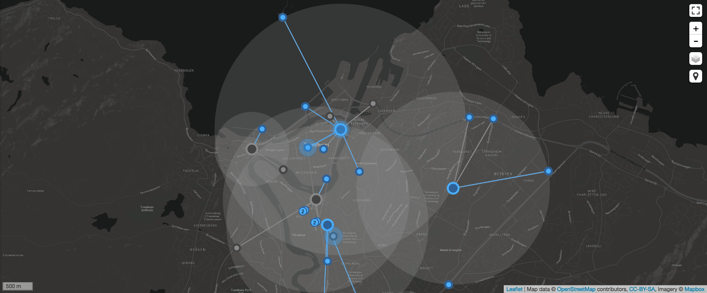

About
This is a website for a project thesis investigating whether the Low Power Wide Area Network (LPWAN) technology LoRaWAN is a good fit to monitor greenhouse gas (GHG) levels in urban areas. Below you see 1) a map showing real measured GHG data from two sensors in Trondheim, 2) some graphs showing the GHG levels (and some other stuff) measured as part of the proof-of-concept and 3) some meta data.
To efficiently indicate low, medium and high concentrations of certain GHG gases, coloring is used.
For a better overview of the network, a map showing all sensors, gateways and messages sent in real time has been developed. See dataport.item.ntnu.no for a live version of the network map (image below).
Measured Data
Note: The data is not especially accurate. The task of the project report was not to look into data quality, but show that a certain amount of data could be sent at a certain frequency using LoRaWAN.